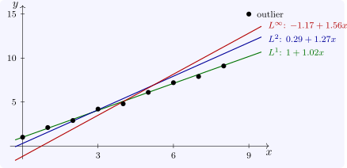

1.3 Linearising non-linear features
Some objectives that are not linear can be made so by adding variables and constraints.
Absolute values. To minimise \(\sum _i|r_i|\) where each \(r_i\) is linear in \(x\), introduce \(e_i \geq 0\) with \(-e_i \leq r_i \leq e_i\) and minimise \(\sum e_i\). At an optimum each \(e_i = |r_i|\), since otherwise \(e_i\) could be decreased.
Minimax. To minimise \(\max _ir_i\), introduce \(t\) with \(r_i \leq t\) for all \(i\) and minimise \(t\). With \(-t \leq r_i \leq t\) this minimises \(\max _i|r_i|\).
Convex piecewise linear costs. A cost \(\max _k(\alpha _k + \beta _kx)\), convex and piecewise linear, is handled as a minimax. Concave costs (economies of scale) cannot be linearised this way; they need integer variables.
These give linear programming formulations of data fitting. Fitting \(y \approx a + bx\) to points \((x_i, y_i)\) by least absolute deviations (the \(L^1\) fit) or by minimising the largest deviation (the Chebyshev, or \(L^\infty \), fit) are both linear programmes, while least squares (the \(L^2\) fit) is not, though it has a formula. The three can differ greatly when the data contain an outlier (Figure 1).

Questions on this section
Stuck on something here? Ask below and it stays attached to this topic.